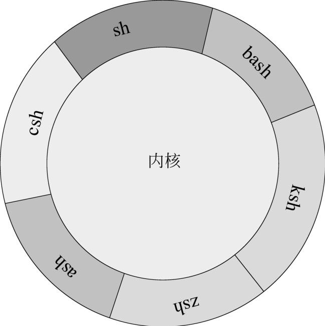

第1章
Shell入门基础
随着Linux和UNIX的广泛应用，Shell日益成为系统管理员的一个非常重要的工具。作为一个优秀的系统管理员或者Linux/UNIX开发者来说，熟练掌握Shell程序设计可以使得工作达到事半功倍的效果。
本章从最基本的Shell概念入手，依次介绍了作为程序设计语言的Shell、向Shell脚本传递参数，以及通过一个最简单的例子来说明如何进行Shell程序设计。
本章主要涉及的知识点如下所述。
- 为什么学习和使用Shell编程：主要介绍Shell在日常管理工作中的重要作用。
- 什么是Shell：主要介绍Shell的基本概念、起源、功能和分类等。
- 作为程序设计语言的Shell：主要介绍什么是交互式程序、如何创建脚本，以及如何将脚本设置为可执行。
- 向脚本传递参数：主要介绍什么是脚本参数，以及脚本参数的用途等。
- 第一个Shell程序：通过一个简单的例子来向读者介绍Shell脚本的基本元素、注释和风格、如何执行Shell程序，以及Shell程序的退出状态。
1.1 为什么学习和使用Shell编程
对于一个合格的系统管理员来说，学习和掌握Shell编程是非常重要的。通过编程，可以在很大程度上简化日常的维护工作，使得管理员从简单的重复劳动中解脱出来。作为本书的第一节，将介绍学习和使用Shell编程的重要性。
作为程序设计语言来说，Shell是一种脚本语言。脚本语言是相对于编译型语言而言的，前者毋需编译，而是由解释器读取程序代码并且执行其中的语句；后者则是预先编译成可执行代码，在使用的时候可以直接执行。
脚本语言的优点在于简单易学，因此，任何人在了解了基本的知识之后都可以毫不费力地编写出一个简单的脚本。关于这一点，在本章的最后一节中将通过一个简单的例子来说明。然而，Shell尽管非常容易上手，但是如果想真正精通Shell编程却不是一件容易的事情。这是因为Shell的语法非常灵活，又涉及Shell中的许多命令。想要真正透彻地了解Shell程序设计，必须下一番功夫才可以。
1.2 什么是Shell
在学习Shell编程之前，必须弄清楚什么是Shell。为了能够使读者在学习具体的Shell编程之前对Shell有个基本的了解，本节将对Shell进行概括性的介绍，包括Shell的起源、功能和分类。
1.2.1 Shell的起源
Shell的起源与计算机世界里面最古老的操作系统UNIX有着密不可分的关系。在1964年，美国AT&T公司的贝尔实验室、麻省理工学院及美国通用电气公司共同参与开始研发一套可以安装在大型主机上的多用户、多任务的操作系统，该操作系统的名称为Multics （MULTiplexed Information and Computing System），运行在美国通用电气公司的大型机GE-645上面。但是由于整个目标过于庞大，糅合了太多的特性，Multics虽然发布了一些产品，但是性能都很低，最终以失败告终。1969年，AT&T最终退出了Multics的开发。但是，该公司其中一位开发者，肯·汤普逊（Kenneth Lane Thompson）则继续为GE-645开发软件。
大约在1970年，另外一位开发者丹尼斯·里奇（Dennis MacAlistair Ritchie）也加入了汤普逊的开发队伍，如图1-1所示。在汤普逊和里奇的组织和领导下，他们启动了另外一个新的多用户、多任务的操作系统的项目，他们把这个项目称之为UNICS（UNiplexed Information and Computing System）。后来，人们取这个单词的谐音，把这个项目称为UNIX。
最初的UNIX完全采用汇编语言编写，因此可移植性非常差。为了提高系统的可移植性和开发效率，汤普逊和里奇于1973年使用C语言重新编写了UNIX。通过这次编写，使得UNIX得以移植到其他小型机上面。
与此同时，第一个重要的标准UNIX Shell于1979年末在UNIX的第7版中推出，并以作者史蒂夫•伯恩（Stephen Bourne）的名字命名，叫做Bourne Shell，简称为sh。Bourne Shell当时主要用于系统管理任务的自动化。此后，Bourne Shell凭借其简单和高效而广受欢迎，很快就成为流行的Shell。虽然Bourne Shell广受欢迎，却缺少一些交互的功能，如命令作业控制、历史和别名等。
而在这时，UNIX的另外一个著名分支BSD UNIX也悄然兴起，随着风头正劲的BSD，另一个老牌Shell也登场了，它就是比尔•乔伊（Bill Joy）在加州大学伯克利分校读书期间开发的C Shell。C Shell开发于二十世纪七十年代末，作为BSD UNIX系统的一部分发布，简称csh。乔伊是美国SUN公司的创始人之一，当年在伯克利分校时主持开发了最早版本的BSD，如图1-2所示。
图1-1 汤普逊和里奇
图1-2 比尔·乔伊
C Shell基于C语言，作为编程语言使用时，语法也类似于C，所以程序员可能会很喜欢它。此外，C Shell还提供了增强交互使用的功能，如作业控制、命令行历史和别名等。当然，C Shell的缺点和其优点一样明显，由于它是为大型机设计并增加了很多新功能，所以，C Shell在小型机上运行比较慢。更为麻烦的是，即使在大型机上，C Shell的速度也不如Bourne Shell，而这个问题，在当时的硬件条件下可以说是致命弱点了。
C Shell之后又出现了许多其他的Shell程序，主要包括Tenex C Shell（tcsh）、Korn Shell （ksh），以及GNU Bourne-Again shell（bash），关于这些Shell的特点，不再详细介绍。
 说明：目前，无论是在UNIX系统中，还是在Linux系统中，比较流行的Shell程序都是bash。
说明：目前，无论是在UNIX系统中，还是在Linux系统中，比较流行的Shell程序都是bash。
1.2.2 Shell的功能
Shell这个单词的意思是“外壳”，它形象地表达出了Shell的作用。在UNIX以及Linux中，Shell就是套在内核外面的一层外壳，如图1-3所示。正因为有Shell的存在，才向普通的用户隐藏了许多关于系统内核的细节。

图1-3 UNIX/Linux Shell
Shell又称命令解释器，它能识别用户输入的各种命令，并传递给操作系统。它的作用类似于Windows操作系统中的命令行，但是，Shell的功能远比命令行强大得多。在UNIX或者Linux中， Shell既是用户交互的界面，也是控制系统的脚本语言。
1.2.3 Shell的分类
关于Shell的分类，在介绍Shell的历史的时候已经简单地介绍过一些了，下面对各种Shell程序做一个简单的概括。常见的几种Shell程序如下所述。
- Bourne Shell：标识为sh，该Shell由Steve Bourne在贝尔实验室时编写。在许多UNIX系统中，该Shell是root用户的默认的Shell。
- Bourne-Again Shell：标识为bash，该Shell由Brian Fox在1987年编写，是绝大多数Linux发行版的默认的Shell。
- Korn Shell：标识为ksh，该Shell由贝尔实验室的David Korn在二十世纪八十年代早期编写。它完全向上兼容Bourne Shell并包含了C Shell的很多特性。
- C Shell：标识为csh，该Shell由Bill Joy在BSD系统上开发。由于其语法类似于C语言，因此称为C Shell。
对于这些Shell程序，其语法或多或少都有所区别。目前大部分人仍然建议使用标准的Bourne-Again Shell。
1.3 作为程序设计语言的Shell
Shell不仅仅是充当用户与UNIX或者Linux交互界面的角色，还可以作为一种程序设计语言来使用。通过Shell编程，可以实现许多非常实用的功能，提高系统管理的自动化水平。本节将介绍作为程序设计语言的Shell的一些特性。
1.3.1 交互式程序
现在读者已经对Shell有了初步的了解，接下来的内容将要逐步接触到真正的Shell脚本程序了。通常情况下，Shell脚本程序有以下两种执行方式：
（1）用户可以依次输入一系列的命令，交互式地执行它们；
（2）用户也可以把所有的这些命令按照顺序保存在一个文件中，然后将该文件作为一个程序来执行。
下面我们首先介绍交互式执行Shell程序。
在命令行上直接输入命令来交互式地执行Shell脚本是一种非常简单的方式。尤其是在测试Shell程序的时候，通过使用交互式方式，可以非常方便地得到程序执行的结果。
【例1-1】该例子的作用是在当前目录中查找文件名包含“xml”这3个字符的文件。如果找到的话，则在当前屏幕上打印出来。我们可以在Shell提示符后面依次输入下面的代码：
每当输入完一行后，都要按回车键换行。当我们输入完第8行之后，Shell开始执行输入的代码，第9行～第14行是Shell程序的输出结果。从结果中可以得知，当前目录中有6个文件的文件名包含“xml”这3个字符。
注意：当Shell期待用户下一步的输入时，正常的Shell提示符“#”将会改变为“>”。用户可以一直输入下去，由Shell来判断何时输入完毕并立即执行程序。
关于上面的程序所涉及的语法，我们将在后面的内容中依次介绍。在此读者只要掌握交互式执行程序的方法即可。
尽管上面的执行方法非常方便快捷，但是，如果每次在执行同一个程序的时候都要重新输入一次将会非常麻烦。此外，如果对程序不是很清楚的情况下，则容易发生输入错误，导致程序不能执行。因此，在实际开发中，这种交互式执行程序的方式并不常见。而是采用将这些语句写入一个脚本文件作为一个程序来执行。
1.3.2 创建脚本
对于一组需要经常重复执行的Shell语句来说，将它们保存在一个文件中来执行是一种非常明智的做法。我们通常称这种包含多个Shell语句的文件为Shell脚本，或者Shell脚本文件。脚本文件都是普通的文本文件，可以使用任何的文本编辑器查看或者修改Shell脚本文件。
【例1-2】使用vi命令创建Shell脚本文件。在Shell命令行中输入vi命令，然后输入以下代码：
从上面的代码可以得知，Shell程序中的注释以“#”符号开始，一直持续到该行的结束。请注意第一行#!/bin/sh，它是一种特殊形式的注释，其中，“#!”字符告诉系统同一行中紧跟在它后面的那个参数是用来执行本文件的程序。在这个例子中，/bin/sh是默认的Shell程序。
1.3.3 把脚本设置为可执行
当将脚本编辑完成之后，这个脚本还不能马上执行。在Linux中，当用户执行某个程序时，必须拥有该文件的执行权限。用户可以通过ls-l或者ll命令来查看文件的访问权限，其中ll命令只可以在Linux中使用。下面是ll命令的执行结果：
在上面的输出结果中，每一行都是一个文件的描述信息。一共包括6列，其中第一列就是文件的访问权限。通常情况下，每个文件的访问权限都由9位组成，其中最前面的3位表示文件的所有者对于该文件的访问权限，中间的3位表示与所有者同组的其他用户对于该文件的访问权限，最后3位表示其他组的用户对于该文件的访问权限。
在每一组权限中，都用3个字母来表示3种不同的权限，r表示读取权限，w表示写入权限，x表示执行权限。
我们可以发现，在上面的ex1-2.sh文件的权限描述中，任何用户都没有该文件的执行权限。因此，该文件无法直接执行。
为了使得用户拥有某个文件的执行权限，我们可以使用chmod命令。该命令的基本语法如下：
其中，options表示各种权限选项。用户可以使用r、w及x这3个字母分别表示读取、写入和执行的权限，也可以使用数字来表示权限。在数字模式下，4表示读取权限，2表示写入权限，1表示执行权限。另外，用户还可以指定执行权限授予的对象，其中u表示文件的所有者，g表示所有者所属的组，o表示其他组的用户。在授予权限时，操作符加号“+”表示授予权限，减号“-”表示收回权限。
例如，下面的操作授予文件ex1-2.sh的所有者执行权限：
对于上面的权限，用户也可以使用数字来表示，如下：
在上面的命令中，作为选项的3个数字“744”分别表示文件所有者、所有者所属的用户组以及其他组的权限。其中7是由4、2和1这3个数字相加而得，4表示读取权限。
当授予用户执行权限之后，就可以执行该脚本了，如下：
注意：777是一个特殊的权限，表示所有的用户都可以读、写和执行该文件。许多用户为了操作上的方便，会直接将该权限授予某些文件。通常情况下，这样的操作会带来安全隐患，因此，在将该权限授予用户时，一定要谨慎。
1.4 向脚本传递参数
许多情况下，Shell脚本都需要接收用户的输入，根据用户输入的参数来执行不同的操作。本节将介绍Shell脚本的参数，以及如何在脚本中接收参数。
1.4.1 Shell脚本的参数
从命令行传递给Shell脚本的参数又称为位置参数，这主要是因为Shell脚本会根据参数的位置来接收它们的值。在Shell脚本内部，用户可以通过一系列的系统变量来获取参数。这些变量的名称都是固定的，并且非常简单，只用1个字符表示，例如$0表示当前执行的脚本名称，$1表示传递给脚本的第1个参数等。表1-1列出了常用的与参数传递有关的系统变量。
表1-1 常用的与参数传递有关的系统变量
| 变量名 | 说 明 |
| $n | 表示传递给脚本的第n个参数，例如$1表示第1个参数，$2表示第2个参数…… |
| $# | 命令行参数的个数 |
| $0 | 当前脚本的名称 |
| $* | 以“参数1参数2参数3……”的形式返回所有参数的值 |
| $@ | 以“参数1”“参数2”“参数3”……的形式返回所有参数的值 |
| $_ | 保存之前执行的命令的最后一个参数 |
通过表1-1，可以得知，Shell的位置参数按照0，1，2……的顺序从0开始编号。其中，0表示当前执行的脚本的名称，而1表示第1个参数。由单引号或者双引号引起来的字符串作为一个参数进行传递，传递时会去掉引号。
注意：对于包含空白字符或者其他的特殊字符的参数，需要使用单引号或者双引号进行传递。
变量$@可以以“参数1”“参数2”“参数3”……的形式返回所有的参数的值，因此，$@与“$1”“$2”“$3”……是等价的。如果用户传递的参数中包含空格或者其他的特殊字符，需要使用$@来获取所有的参数的值，不能使用$*。
变量$*以“参数1参数2参数3……”的形式将所有的参数作为一个字符串返回。通常情况下，参数值之间通过空格、制表符或者换行符来隔开，在默认情况下使用空格。
变量$#返回传递给脚本的参数的数量，不包括$0，即排除脚本的名称。
另外，如果用户传递的参数多于9个，则不能使用$10来引用第10个参数。为了能够获取第10个参数的值，用户必须处理或保存第1个参数，即$1，然后使用shift命令删除参数1并将所有剩余的参数下移1位，此时$10就变成了$9，依此类推。$#的值将被更新以反映参数的剩余数量。
【例1-3】传递脚本参数。代码如下：
然后通过以下方式来执行：
在上面的代码中，向ex1-3.sh脚本传递了2个参数，其中第2个参数含有空格，所以需要使用双引号引起来。
1.4.2 参数扩展
在上面的小节中，已经介绍了通过系统变量来获取脚本参数的值。对于简单的脚本而言，这已经足够了。因为用户完全可以通过变量$1、$2……来依次获得全部参数，还可以通过$#获得参数的个数。但是，在实践中，用户遇到的并不总是这种简单的情况。例如，用户需要编写一个脚本程序，并且这个脚本程序需要一个拥有许多值的参数，在程序中，用户希望根据这个参数的值来执行不同的操作。在这种情况下，单纯地依靠$1以及$2等变量已经不能满足需求了。此时，用户可以考虑使用参数扩展。
如果接触过UNIX或者Linux，那么用户已经对于ls命令不会陌生。ls命令可能是UNIX或者Linux系统中选项最多的命令了。例如，用户可以使用-l选项来以长格式的方式显示当前目录的内容。实际上，这个-l也是ls命令的一个参数。这个参数与前面介绍的参数的不同之处在于它拥有一个前导的连字符“-”。
用户可以在Shell脚本中使用同样的技术，这称为参数扩展。为了获取到这些参数的值，用户需要在Shell程序中使用getopts命令。
【例1-4】介绍如何使用参数扩展，代码如下。
对于上面的代码，我们不做过多的介绍，此处只是了解如何使用参数扩展。在代码的第7行中，getopts命令后面的双引号中的第一个冒号告诉getopts命令忽略一般的错误消息，因为此脚本将提供它自己的错误处理。p和q则是两个选项名称。选项后面的冒号表示该选项需要一个值。例如，在绝大部分的命令中，-f选项都可能需要一个文件名。
当找到某个选项时，getopts命令返回true。第二个参数是变量名optname，该变量将接收找到选项的名称。以上程序的执行结果如下：
1.5 第一个Shell程序：Hello，Bash Shell！
通过前面几节的学习，读者已经接触到一些Shell程序了。在本节中，将介绍一个完整的Shell程序，使得读者能够掌握Shell程序的组成元素，并写出简单的程序。
1.5.1 Shell脚本的基本元素
在学习任何程序设计语言的时候，似乎那个经典的Hello world!都是一个必不可少的例子。接下来，我们介绍如何在Shell语言中实现这个例子。
【例1-5】输出Hello world!，代码如下。
这是一个完整的Shell程序，对于拥有执行权限的用户来说，这也是一个可执行的Shell程序。上面的代码非常简单，实际上最主要的只有一行，即第5行，这一行的作用只是在控制台上面输出一行消息。
接下来执行一下这个程序，看看到底会出现什么结果，命令如下：
从上面的执行结果可以得知，这个程序已经得到了预期的结果。但是，读者可能会有疑问，作为一个Shell程序，应该具备哪些元素呢？分析上面的例子，可以得知，一个最基本的Shell程序，应该拥有第2行的：
关于这一行的作用，将在下面的内容中详细介绍。另外，第4行是一行注释，用来说明下面的代码的功能。第5行是echo语句，这一行是实现整个程序功能的代码。
所以，对于一个基本的Shell程序来说，应该拥有以下基本元素。
- 第2行的“#!/bin/bash”。
- 注释：说明某些代码的功能。
- 可执行语句：实现程序的功能。
在接下来的内容中，将依次介绍这些基本的元素。
1.5.2 指定命令解读器
当用户在命令行中执行一个脚本程序的时候，Shell会首先判断用户是否拥有该程序的执行权限。如果没有执行权限的话，Shell给出“Permission denied”的提示；否则，Shell会创建一个新的进程，解释并执行Shell程序中的语句。
但是，无论是在UNIX，还是在Linux中，通常会同时安装多个Shell程序，例如sh、bash或者csh等。而这些不同的Shell程序的语法会有些区别，那么到底使用哪个Shell来执行代码呢？
实际上，【例1-5】中的第2行的作用正是告诉当前的Shell，应该调用哪个Shell来执行当前的程序。我们再来回顾一下【例1-5】的第2行代码：
当用户在命令行中执行该程序时，当前的Shell会载入该程序的代码，并且读取其中的第2行，如果发现有“#!”标识，则表示当前的程序指定了解释并执行它的Shell。然后会尝试读取“#!”标识后面的内容，搜寻解释器的绝对路径。如果发现了指定的解释器，则会创建一个关于该解释器的进程，解释并执行当前脚本的语句。在【例1-5】中，当前的Shell会创建/bin/bash的进程，执行ex1-5.sh脚本文件中的语句。
注意：用户应该在“#!”标识后面指定解释器的绝对路径。
Shell脚本的这个规定使得用户可以非常灵活地调用任何解释器，而不仅仅限于Shell程序。下面介绍如何在脚本文件中指定其他解释器程序。
【例1-6】在PHP脚本文件中指定PHP语言的解释器，然后执行文件中的PHP代码，代码如下：
在上面的代码中，第3行指定解释当前文件的解释器的绝对路径，第5行是PHP代码的开始标识符，第7行使用print语句输出字符串“Hello world!”，第8行是PHP代码的结束标识符。
该程序的执行结果如下：
用户还可以指定其他一些命令，例如more或者cat来显示当前程序的代码，请参见下面的例子。
【例1-7】指定more命令作为脚本文件的解释器，代码如下：
读者应该想象得到，该程序的执行结果会是什么样子。没错，该程序的执行结果是调用more命令来显示当前程序的代码，而不是执行程序中的代码本身。如下：
到此为止，读者对于“#!”标识的作用有了比较深入的理解。从本质上讲，该标识的作用就是指定解释当前脚本文件的程序，至于最后的结果会是什么样子，还要看指定的程序。如果指定的是Shell或者某些程序语言的解释器，例如/usr/local/php5/bin/php，则会执行其中的代码；如果是其他一些程序，例如/bin/more，则会显示当前脚本文件的内容。
1.5.3 Shell脚本中的注释和风格
通过在代码中增加注释可以提高程序的可读性。传统的Shell只支持单行注释，其表示方法是一个井号“#”，从该符号开始一直到行尾都属于注释的内容。例如【例1-5】中的第4行：
如果需要多行注释内容的话，则在每行注释的开头都要加上“#”，例如：
但是这并不意味着用户只能使用单行注释。实际上，用户还可以通过其他一些变通的方法来实现多行注释，其中，最简单的方法就是使用冒号“:”配合here document，其语法如下：
【例1-8】通过here document实现了多行注释，代码如下：
注意：一个here document就是一段带有特殊目的的代码段，它使用I/O重定向的形式将一个命令序列传递到一个交互程序或者命令中，比如ftp、cat或者ex文本编辑器。在【例1-8】中，我们是将BLOCK之间的代码重定向到一个不存在的命令，从而间接地实现了多行注释。
1.5.4 如何执行Shell程序
在1.3.3节中，我们介绍了如何使得程序变得可执行。那就是修改脚本文件的访问权限。实际上，在Linux中，如果要执行某个Shell程序，用户可以通过3种方式来实现。这3种方式分别为：
- 授予用户执行该脚本文件的权限，使得该程序能够直接执行。
- 通过调用Shell脚本解释器来执行。
- 通过source命令来执行。
关于第一种方法，前面已经详细介绍过了，不再重复说明。第二种方式就是将脚本文件作为参数传递给解释器，在通过这种方式执行脚本的时候，不需要用户拥有执行该脚本文件的权限，只要拥有读取该文件的权限即可。
对于【例1-5】，用户可以使用以下方式来执行：
在上面的命令中，/bin/bash是bash Shell的绝对路径。用户首先调用bash，然后bash会载入ex1-5.sh，并且解释其中的语句，最后给出程序的执行结果。
因此，对于第二种方式，用户首先调用的是解释器，然后由解释器解释脚本文件。而第一种方式则是直接在脚本文件中指定解释器，当前的Shell会自动调用指定的解释器，然后创建进程再执行脚本文件。所以，第一种方式和第二种方式在本质上是一样的。
source命令是一个Shell内部命令，其功能是读取指定的Shell程序文件，并且依次执行其中所有的语句。该命令与前面两种方式的区别在于只是简单地读取脚本里面的语句，并且依次在当前的Shell里面执行，并没有创建新的子Shell进程。脚本里面所创建的变量都会保存到当前的Shell里面。
注意：由于source命令是在当前的Shell中执行脚本文件，因此其执行结果可能会与前面两种方式不同。
例如，【例1-5】也可以使用以下方式执行：
1.5.5 Shell程序的退出状态
在UNIX或者Linux中，每个命令都会返回一个退出状态码。退出状态码是一个整数，其有效范围为0～255。通常情况下，成功的命令返回0，而不成功的命令返回非0值。非0值通常都被解释成一个错误码。运行良好的UNIX命令、程序和工具都会返回0作为退出码来表示成功，偶尔也会有例外。
同样，Shell脚本中的函数和脚本本身也会返回退出状态码。在脚本或者是脚本函数中执行的最后的命令会决定退出状态码。另外，用户也可以在脚本中使用exit语句将指定的退出状态码传递给Shell。
在前面的所有的例子中，我们都没有通过exit语句退出程序。在这种情况下，整个程序的退出状态码由最后执行的那一条语句来决定。例如，在下面的脚本中，整个脚本的退出状态将由statement_last这条语句的退出状态来决定。
另外，在Shell中，系统变量$?保存了最后一条命令的退出状态，因此，上面的程序与下面的程序的效果是完全相同的：
其中，第9行的$?保存了最后一条语句statement_last的退出状态。当然，exit语句也可以不带任何参数，此时，脚本的退出状态也由最后一条语句的退出状态决定，所以，上面的程序与下面的程序的效果也是完全相同的：
程序的退出状态非常重要，它反映了脚本的执行是否成功。用户可以根据脚本的执行状态来决定下一步的操作。
【例1-9】演示在不同的情况下程序的退出状态，代码如下：
在上面的代码中，第4行是一个正常的echo语句，因此第6行的输出结果应该是0。第8行是一个无效的命令，因此第10行会输出一个非0值，具体是什么值要看当前Shell的设置。第11行是一个正常的echo语句，同样该语句的退出状态也是0。第13行通过exit语句将退出状态码120返回给当前的Shell。
例1-9的执行结果如下：
在上面的执行结果中，第2行是第4行的echo语句的执行结果。第3行的0是【例1-9】中第6行的echo语句的退出状态码。第4行的错误信息是【例1-9】中第8行的无效命令给出的。第5行的127是上面的无效命令的退出状态码。由于程序已经退出，所以需要用户手动输入执行结果中的第7行命令，获取整个脚本的退出状态码，从执行结果可以得知，该脚本的退出状态码为120，这正是【例1-9】中的第13行的exit语句返回的数值。
1.6 小结
作为本书的第1章，本章主要介绍了与Shell程序设计有关的基础知识。包括为什么要学习和使用Shell程序设计、什么是Shell、作为程序设计语言的Shell有哪些特点，以及Shell脚本的参数传递问题。最后介绍了一个非常简单的例子，用来说明Shell程序的基本组成元素和退出状态。本章的重点在于掌握好Shell程序的基本组成部分，以及如何执行Shell程序。在下面一章中，将介绍Shell编程环境的搭建。
Table of contents
- 内容简介
- 前言
- 目录
- 第1篇 认识Shell编程
-
第2篇 Shell编程基础
- 第3章 变量和引用
- 第4章 条件测试和判断语句
- 第5章 循 环 结 构
- 第6章 函数
- 第7章 数组
- 第8章 正则表达式
- 第9章 基本文本处理
- 第10章 流 编 辑
- 第11章 文本处理利器awk命令
- 第12章 文件的操作
- 第13章 子Shell与进程处理
- 第3篇 Shell编程实战
- 附录CD